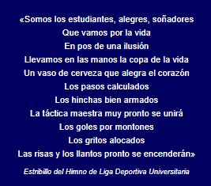
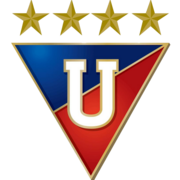

Uniforme
El Club Universitario, antecedente del equipo azucena, tuvo dos uniformes; el primero fue una camiseta blanca con una franja diagonal roja desde el hombro derecho hasta la parte inferior izquierda, pantalón azul y medias blancas; el segundo creado en 1919 fue una camiseta azul con el escudo representando a la Universidad Central del Ecuador, un triángulo invertido de fondo azul y rojo con las letras UC en blanco. Estos dos uniformes fueron utilizados de manera alternada hasta la creación oficial de Liga de Quito en 1930.
Desde su re-fundación, el conjunto albo se ha caracterizado por utilizar el color blanco en su uniforme. El uniforme fue idealizado en 1930 por Bolívar León, uno de los fundadores del club. El primer uniforme tenía camiseta blanca con el escudo del club en el centro del pecho, pantalón blanco y medias azules. Los colores azul y rojo, son considerados los colores secundarios del club, estos han aparecido en los uniformes del equipo en pequeñas proporciones. En los últimos años, el color rojo ha prevalecido por encima del color azul.
Estadio
A lo largo de su historia Liga de Quito ha jugado como local en el desaparecido Estadio El Ejido, en el Estadio Universitario y en el Estadio Olímpico Atahualpa, en este último actuó de local hasta el año 1996. Desde el año 1997 el equipo juega de local en su propio estadio.
El Estadio de Liga Deportiva Universitaria, más conocido como Estadio Casa Blanca y actualmente denominado Estadio Rodrigo Paz Delgado, es el segundo estadio más grande de Ecuador con una capacidad de 41 575 personas reglamentariamente.
Himno
La actual canción oficial de Liga Deportiva Universitaria se titula Casta de Campeón, la cual fue creada y estrenada en 1998 con motivo de que Liga de Quito se proclamó campeón nacional de ese año. El intérprete y autor de la letra y música de esta canción es el cantante, compositor y músico Riccardo Perotti.
Escudo
Desde 2008, el escudo lleva estrellas doradas sobre el triángulo invertido, las cuales se han incrementado conforme a los títulos internacionales que ha conseguido el club. En la actualidad posee 4 y representan a la Copa Libertadores 2008, Copa Sudamericana 2009, Recopa Sudamericana 2009 y Recopa Sudamericana 2010.
